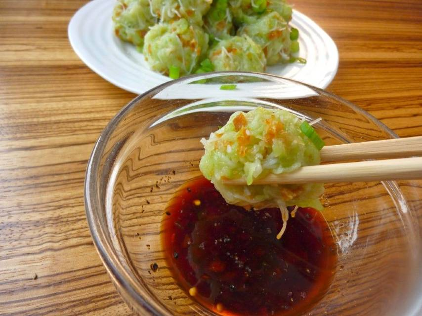

Chayotte Dumplings

Description
The Sino-Mauritian recipe for chayotte dumplings in Mauritius is good for your health, easy to prepare and taste great.
Ingredients
- 500g chayotte
- 100g tapioca starch
- 100g minced meat (or dried shrimps)
- 1 tsp soy sauce
- 2 tsp salt
Steps
- Peel and grate the chayottes and salt them.
- Leave for 15 min, wring well in a cloth and set aside.
- Combine tapioca starch, minced meat, soy sauce and chayotte.
- Salt and knead.
- Form the dumplings with the dough and steam for 20 minutes.
- For Tapioca starch, the dosage can vary, I advise you to ball a dumpling and put in the steamer, if your dumplings flatten, add starch to the mixture, knead again and try steaming again.
Return to Homepage